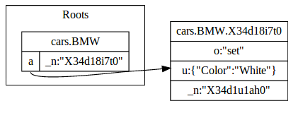
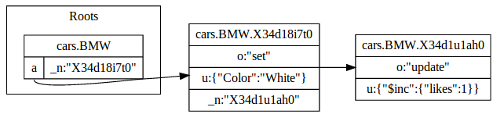

SyncIt breaks data into Datasets and Datakeys, these are like Tables and Rows in SQL or Collections and Documents in MongoDB.
As you make changes to the data stored within a Datakey it will maintain a list a list of the changes that have occurred. So you can make a function call like this...
// In this case, 'cars' is the Dataset and 'BMW' is the Datakey the last
// parameter is what to set that Dataset / Datakey to. The last parameter
// is a callback when the update is complete.
syncIt.set(
'cars',
'BMW',
{ color: "white" },
function(status) { ... }
);
And SyncIt's data would look something like the following:
As more changes occur they build up in the form of a linked list:
Eventually you will want to synchronize your data with what is on the server. SyncItControl can do this for you. It will:
// A simple function which applies local changes to a Dataset / Datakey if the
// last local change is after the last remote (server supplied) change.
function(
dataset, // The dataset where the conflict has occurred
datakey, // The datakey where the conflict has occurred
storedrecord, // Data/version common to local and the server
localChanges, // The local changes that have been made since
remoteChanges, // Server supplied changes from other users / devices
resolved // A callback function for when the conflict is resolved
) {
"use strict";
var lastRemoteTs = null, lastLocalTs = null;
// Get the timestamps of the local and remote changes
remoteChanges.map(function(c) { lastRemoteTs = c.t; });
localChanges.map(function(c) { lastLocalTs = c.t; });
// If the last local is later than the remote, apply the local
// changes on top.
if (lastLocalTs > lastRemoteTs) {
return resolved(true, localChanges);
}
// Otherwise leave the remote changes
return resolved(true,[]);
};
It will then upload the local changes sequentially using your function, after which SyncItControl enters a "synchronized state".
// Standard familiar AJAX code...
uploadChangeFunction = function(queueitem, next) {
$.ajax({
url: '/syncit/' + deviceId,
data: queueitem,
type: 'POST',
error: function(xmlHttpRequest) {
next(xmlHttpRequest);
},
success: function(resp) {
next(null);
}
});
};
During the "Downloading" phase the connection which was actually established was an EventSource and it also hooked into some SyncIt callbacks. This means that: